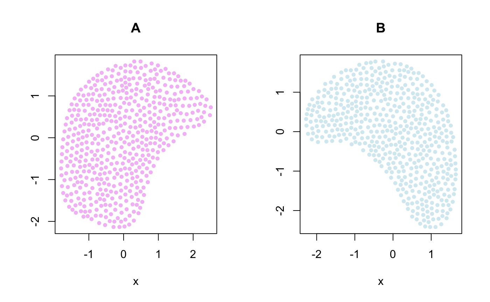

library(grDevices)
library(magick)
point_cloud_from_image <- function(fpath, scale_size="400"){
im <- as.raster(image_scale(image_read(fpath), scale_size))
x <- col(im)[which(im != "transparent")]
y <- row(im)[which(im != "transparent")]
scale(cbind(x, nrow(im) - y))
}
A <- point_cloud_from_image("~/Desktop/A.png")
B <- point_cloud_from_image("~/Desktop/B.png")
library(Mapper)
A <- A[landmarks(A, 500),]
B <- B[landmarks(B, 500),]layout(matrix(c(1,2), nrow=1))
plot(A, pch=20, col = rgb(243/255, 193/255, 245/255), main = "A")
plot(B, pch=20, col = rgb(215/255, 235/255, 241/255), main = "B")
## Rips complex
VR <- function(X, diameter){
x_dist <- as.matrix(dist(X))
diag(x_dist) <- Inf
edges <- cbind(row(x_dist)[x_dist < diameter], col(x_dist)[x_dist < diameter])
st <- simplextree::simplex_tree()
st$insert(as.list(seq(nrow(X))))
if (nrow(edges)==0){ return(st) }
edge_lst <- lapply(seq(nrow(edges)), function(i){ edges[i,] })
st$insert(edge_lst)
return(st)
}
## Make rips complex
rips_A <- VR(A, 0.35)
rips_B <- VR(B, 0.35)Get geodesics
## Warning: package 'igraph' was built under R version 3.5.2geodesic_dist <- function(X, dX, complex){
weighted_am <- with(list(AM=complex$as_adjacency_matrix(), E=complex$edges), {
AM[E] <- as.matrix(dX)[E]
return(AM)
})
distances(graph_from_adjacency_matrix(weighted_am, weighted = TRUE))
}
geo_A <- geodesic_dist(A, dist(A), rips_A)
geo_B <- geodesic_dist(B, dist(B), rips_B)Get GW distance (default is lower bound)
## Warning: package 'ROI' was built under R version 3.5.2library(ROI.plugin.glpk)
library(ROI.plugin.nloptr)
gh_res <- Mapper::gromov_hausdorff(geo_A, geo_B, mu_X = rep(1/nrow(A), nrow(A)), mu_Y = rep(1/nrow(B), nrow(B)))
print(gh_res$gh)## [1] 0.01335193